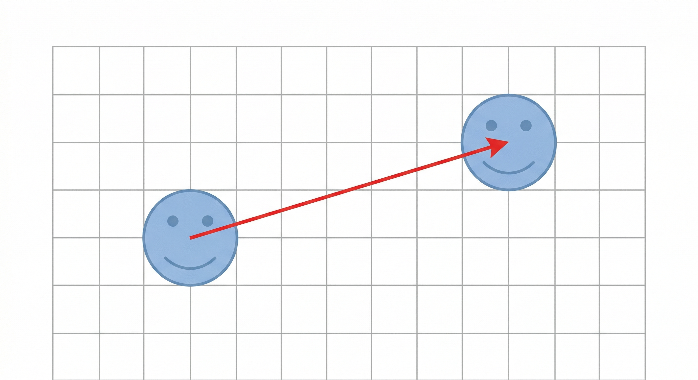

6°
EXPLORACIÓN
Observa la siguiente situación:
Un estudiante está jugando en un videojuego donde su personaje se mueve sobre una cuadrícula.
En un momento, el personaje se encuentra en una posición y luego aparece en otra sin girar ni cambiar de forma, solo “se desliza” en la pantalla.

En tu cuaderno escribe:
1. ★ ¿Qué observas que ocurre con el personaje?
2. ★ ¿El personaje cambia de forma o tamaño? Explica.
3. ★ ¿Qué tipo de movimiento parece estar realizando? Describe con tus palabras.
4. ¿Hacia dónde se mueve el personaje: derecha, izquierda, arriba o abajo?
5. ¿Cómo podrías indicar exactamente cuánto se movió el personaje?
Situación guiada
Imagina ahora que estás ubicado en un plano como el trabajado en clases anteriores.
Un punto se encuentra en una posición inicial y luego aparece en otra posición distinta.
Observa el cambio de posición del punto en el plano.
Compara el lugar donde estaba inicialmente con el lugar donde aparece después.
Concéntrate en cómo cambia su ubicación dentro de la cuadrícula.
Responde:
6. ★ ¿Qué crees que tuvo que ocurrir para que el punto cambiara de lugar?
7. ★ ¿Se mantiene la forma del punto o figura al moverse?
8. ¿Qué necesitarías saber para describir con precisión ese movimiento?
9. ¿Podrías usar números para describir ese desplazamiento? ¿Cómo?
No escribas definiciones todavía.
Describe lo que observas y lo que crees que ocurre.
ANALIZA
Observa nuevamente el plano
Un punto se encuentra inicialmente en una posición y luego aparece en otra.
📝 En tu cuaderno escribe:
1. ★ Si el punto se mueve hacia la derecha, ¿qué crees que sucede con su posición?
2. ★ Si el punto se mueve hacia arriba, ¿qué crees que sucede?
3. ¿Qué ocurre si se mueve hacia la izquierda?
4. ¿Qué ocurre si se mueve hacia abajo?
Exploración numérica
Imagina que un punto:
- Avanza 3 unidades hacia la derecha.
- Luego avanza 2 unidades hacia arriba.
Responde:
5. ★ ¿Dónde crees que quedaría ubicado el punto?
6. ★ ¿Cómo podrías describir ese movimiento usando números?
7. ¿Crees que el orden en que se mueve (primero horizontal, luego vertical) es importante? Explica.
Comparación de movimientos
Observa dos situaciones:
- Movimiento A: 2 unidades a la derecha y 1 hacia arriba.
- Movimiento B: 1 unidad a la derecha y 2 hacia arriba.
Responde:
8. ★ ¿Los dos movimientos llevan al mismo lugar?
9. ¿En qué se diferencian?
10. ¿Qué cambia cuando cambian los números del movimiento?
No escribas reglas todavía.
Explica con tus palabras lo que crees que está pasando.
CONOCE ALGO NUEVO
¿Qué es una traslación?
A partir de lo que observaste en las actividades anteriores, ahora es posible describir con mayor precisión cómo cambia la posición de un punto o una figura en el plano.
Cuando un punto o una figura se mueve de un lugar a otro sin girar, sin cambiar su forma y sin modificar su tamaño, se realiza un movimiento llamado traslación.
Características de la traslación
En una traslación:
- Todos los puntos de la figura se desplazan la misma distancia
- Todos los puntos se mueven en la misma dirección
- La figura no cambia su forma
- La figura no cambia su tamaño
- La figura no gira
¿Cómo se describe una traslación?
Para describir una traslación en el plano, se tienen en cuenta dos movimientos:
Paso 1. Movimiento horizontal
Indica cuántas unidades se desplaza hacia la derecha o hacia la izquierda.
Paso 2. Movimiento vertical
Indica cuántas unidades se desplaza hacia arriba o hacia abajo.
Ejemplo guiado
Observa el siguiente desplazamiento en el plano.
Un punto se encuentra inicialmente en una posición y luego aparece en otra.
Para describir su movimiento:
Paso 1. Se identifica el desplazamiento horizontal
El punto se mueve 4 unidades hacia la derecha
Paso 2. Se identifica el desplazamiento vertical
El punto se mueve 2 unidades hacia arriba
Por lo tanto, el desplazamiento se puede expresar como:
(4, 2)
¿Cómo interpretar este par de números?
El primer número indica el movimiento horizontal:
- Número positivo → hacia la derecha
- Número negativo → hacia la izquierda
El segundo número indica el movimiento vertical:
- Número positivo → hacia arriba
- Número negativo → hacia abajo
Relación con lo observado
Los movimientos que analizaste anteriormente en el plano, como desplazarse hacia la derecha, izquierda, arriba o abajo, corresponden a traslaciones.
Ahora puedes describir esos movimientos utilizando números para representar con mayor precisión el cambio de posición.
ACTIVIDADES DE APRENDIZAJE
Actividad 1. Identificación de desplazamientos
Observa cada caso y describe el movimiento del punto.
Escribe siempre el desplazamiento en la forma ( , ).
1. Un punto se mueve:
- 3 unidades hacia la derecha
- 1 unidad hacia arriba
Desplazamiento: _________ ★
2. Un punto se mueve:
- 2 unidades hacia la izquierda
- 4 unidades hacia arriba
Desplazamiento: _________ ★
3. Un punto se mueve:
- 5 unidades hacia la derecha
- 2 unidades hacia abajo
Desplazamiento: _________ ★
4. Un punto se mueve:
- 4 unidades hacia la izquierda
- 3 unidades hacia abajo
Desplazamiento: _________
Actividad 2. Interpretación de traslaciones
Observa cada desplazamiento y descríbelo con palabras.
1. (4, 2)
Describe el movimiento: ____________________________ ★
2. (-3, 1)
Describe el movimiento: ____________________________ ★
3. (2, -5)
Describe el movimiento: ____________________________
4. (-4, -2)
Describe el movimiento: ____________________________
Actividad 3. Aplicación en el plano cartesiano
Observa el siguiente plano.
Completa:
1. El punto A se traslada hasta el punto B.
-
- Coordenadas iniciales de A: (____ , ____) ★
- Coordenadas finales de B: (____ , ____) ★
- Desplazamiento horizontal: __________
- Desplazamiento vertical: __________
- Coordenadas iniciales de A: (____ , ____) ★
Traslación: (____ , ____) ★
2. Explica con tus palabras qué ocurrió con el punto A:
__________________________________________________________ ★
Actividad 4. Construcción de traslaciones
Observa el siguiente ejemplo de desplazamiento paso a paso en el plano cartesiano.
Fíjate primero en el movimiento horizontal y luego en el movimiento vertical.
Usa esta idea como apoyo para realizar los ejercicios en tu cuaderno.
Realiza los siguientes desplazamientos en tu cuaderno usando plano cartesiano.
1. Ubica el punto P en (1, 1).
Trasládalo:
-
- 3 unidades hacia la derecha
- 2 unidades hacia arriba
- 3 unidades hacia la derecha
Nueva posición: (____ , ____) ★
2. Ubica el punto Q en (-2, 3).
Trasládalo:
-
- 4 unidades hacia la izquierda
- 1 unidad hacia abajo
- 4 unidades hacia la izquierda
Nueva posición: (____ , ____) ★
3. Ubica el punto R en (0, -1).
Trasládalo:
-
- 2 unidades hacia la derecha
- 3 unidades hacia arriba
- 2 unidades hacia la derecha
Nueva posición: (____ , ____)
Actividad 5. Reto
Un punto se encuentra en (2, -3) y después de una traslación queda en (6, 1).
1. ¿Cuál fue el desplazamiento?
(____ , ____)
2. Explica cómo lo determinaste: _________________________________________________________
REFERENCIAS BIBLIOGRÁFICAS
Ministerio de Educación Nacional. (2016). Vamos a aprender Matemáticas 6. Bogotá: MEN.
Godino, J. D., Batanero, C., & Font, V. (2003). Fundamentos de la enseñanza y el aprendizaje de las matemáticas. Granada: Universidad de Granada.
Ministerio de Educación Nacional. (2006). Estándares básicos de competencias en matemáticas. Bogotá: MEN.
Ministerio de Educación Nacional. (2016). Derechos básicos de aprendizaje: Matemáticas. Bogotá: MEN.